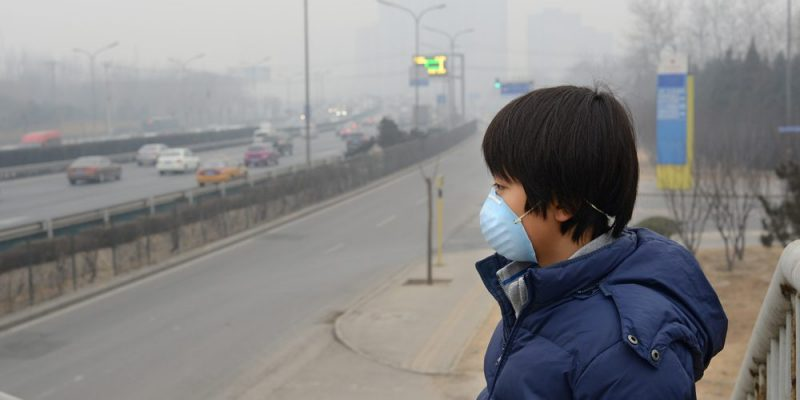

LAS CONSECUENCIAS DE LA CONTAMINACIÓN DEL AIRE
La contaminación del aire es inducida por la presencia en la atmósfera de sustancias tóxicas, principalmente producidas
por la actividad humana en los últimos años. Estos gases y sustancias químicas generan una serie de fenómenos y
consecuencias para los ecosistemas y los seres vivos que pueblan nuestro planeta. Las consecuencias de la contaminación
del aire sobre el ambiente. El aire contaminado, flotando en la superficie de la tierra, es arrastrado por el viento y
la lluvia.
Las nubes y las altas temperaturas también ayudan a dispersar la contaminación para alcanzar distancias muy grandes
desde su punto de origen. Las consecuencias de la contaminación del aire en la salud humana. Nuestra exposición continua
a estos contaminantes del aire es responsable del deterioro de la salud humana. En particular, la contaminación del aire
puede causar problemas cardiovasculares, alergias, ataques de asma, conjuntivitis, enfermedades bronquiales, cáncer de
pulmón o piel, problemas de visión, problemas sanguíneos en el desarrollo mental del niño, entre otros.

 Inicio
Inicio Produccion
Produccion Noticias
Noticias Efectos
Efectos Evitarlo
Evitarlo